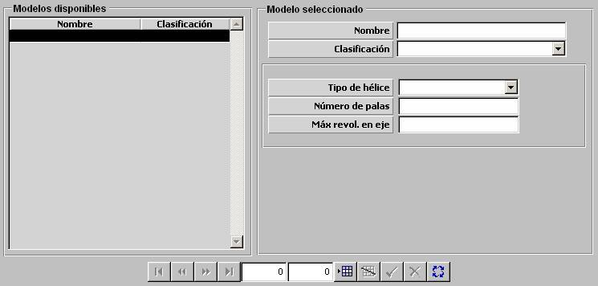

Hélices

Los siguientes parámetros caracterizan las hélices incorporadas por plataformas de superficies y submarinos. Son tenidos en cuenta por el modelo de sonar pasivo, de modo que muestra esta información de hélice para las detecciones de plataformas de superficie y submarinos obtenidas.
Tipo de Hélice: Puede tomar los siguientes valores:
Número de Palas: Número de palas de la hélice.
Unidades: ---
Rango: 0 – 9
Max. Revol. en eje: Número de revoluciones en eje a velocidad máxima de la plataforma.
Unidades: ---
Rango: 0 – 9